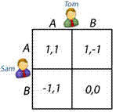

A concept of game theory where the optimal outcome of a game is one where no player has an incentive to deviate from his or her chosen strategy after considering an opponent's choice. Overall, an individual can receive no incremental benefit from changing actions, assuming other players remain constant in their strategies. A game may have multiple Nash equilibria or none at all.
This concept is named after its inventor John Nash and is incorporated in multiple disciplines (ranging from behavioral ecology to economics). If you want to test for a Nash equilibrium, simply reveal each person's strategy to all players. The Nash equilibrium exists if no players change their strategy, despite knowing the actions of their opponents. For example, let's examine a game between Tom and Sam. In this simple game both players can choose: A) received $1, or B) lose $1
 Logically, both players choose strategy A and receive a payoff of $1. If you revealed Sam's strategy to Tom and vice versa, you will see that no player deviates from the original choice. Knowing the other player's move means little, and doesn't change behavior. The outcome A,A represents a Nash equilibrium.
{kind=link}